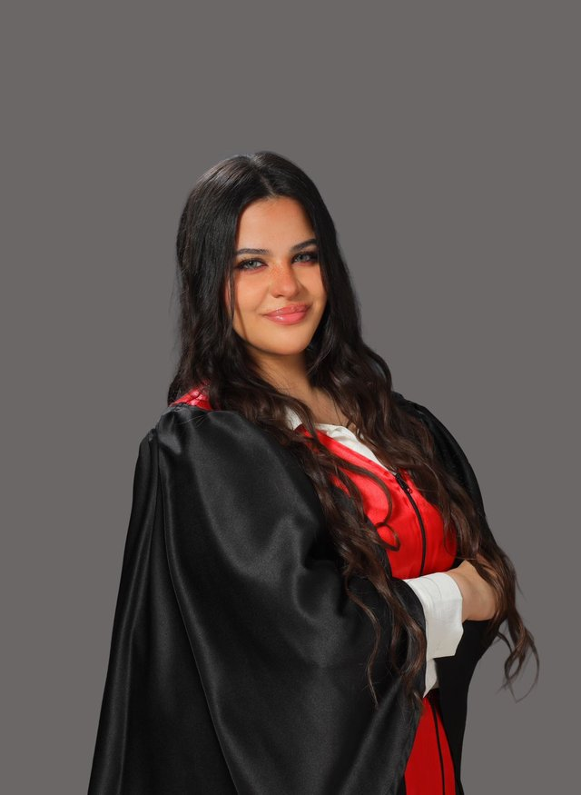

2026
National Academic Excellence Award and Academic Distinction
Awarded by the Ministry of Higher Education and Scientific Research in Jordan, and by the Embassy of Iraq (one of seven students).
B.Sc. in Computer EngineeringPrincess Sumaya University for Technology, Amman, Jordan
I am a computer engineer. I graduated from Princess Sumaya University for Technology (PSUT) in 2026, ranked first in my department and in the School of Engineering. My research interests are adversarial robustness for computer vision models, hardware security with physical unclonable functions (PUFs), and graph algorithms.
I did research at KAUST in the CyberSaR group in late 2025 through the Visiting Student Research Program. I also teach and mentor, and I am preparing for graduate study.
Ranked first in the Department and in the School of Engineering, with a GPA of 95.1/100 and a place on the Honor List every year. I audited graduate courses in algorithms (completing the course research project), cryptography and research methodology. Projects from my coursework are on the projects page.

